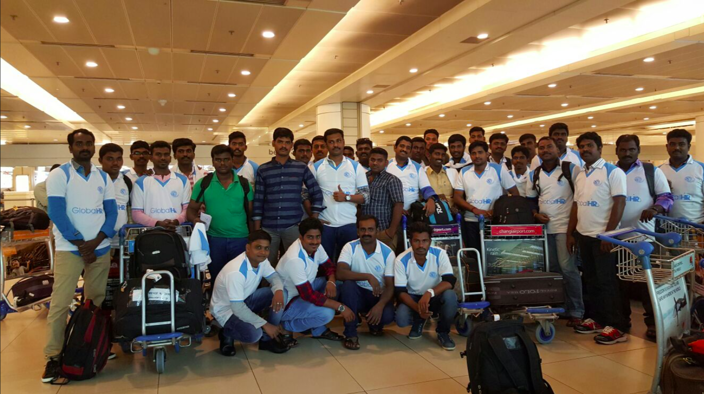
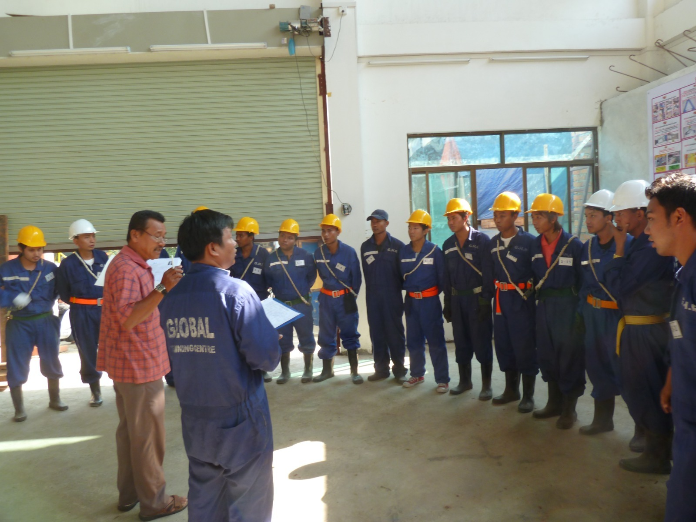
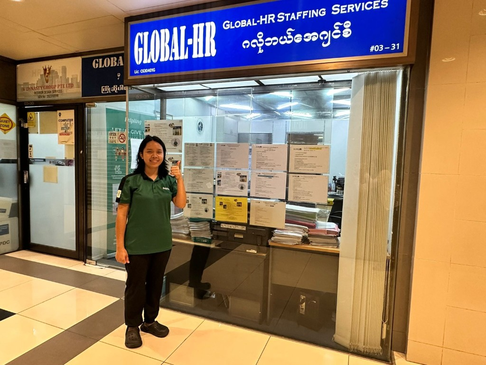
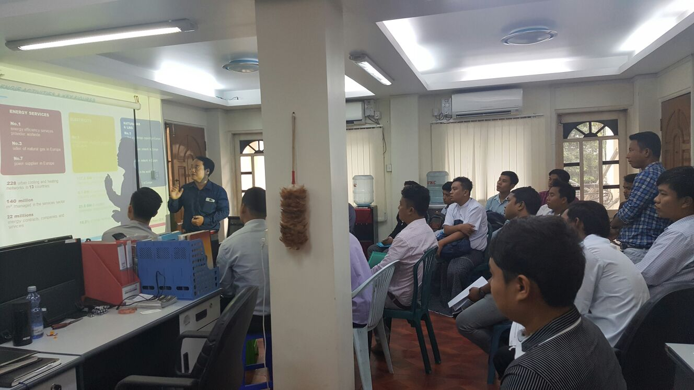

Industries
The sectors we recruit for across Asia-Pacific & beyond — from construction and shipyards to hospitality, healthcare, and cleaning.
Industries we serve

Building Construction

Global HR supplies reliable manpower for Singapore's building construction sector, from general workers and skilled tradesmen to site supervisors and safety coordinators. We understand the demands of BCA-regulated worksites and match candidates who are trained, work-pass ready, and experienced with local safety and quality standards, helping contractors keep projects on schedule without compromising on compliance.
Typical roles include general workers, carpenters, steel fixers, scaffolders, painters, site supervisors, and safety coordinators.
Related programs
 Scaffolding Training
Scaffolding Training


Practical scaffolding training with safety harnesses, hard hats, and live assembly exercises. Workers learn Singapore worksite standards and Global HR safety protocols before deployment to construction and shipyard projects.

Process Construction

For process and industrial construction projects — piping, structural steel, mechanical installation, and plant tie-ins — we place workers who are familiar with the precision and safety requirements of process environments. Our candidates range from welders and riggers to experienced foremen, all screened for the technical competency these projects demand.
Typical roles include welders, pipe fitters, mechanical fitters, riggers, blasting and painting crews, and process construction foremen.
Related programs
Keppel Fels Company Interview Mechanical Fitters


Interview coaching and hands-on screening for mechanical trades at the Global Skill Training Institute. Candidates practice workshop tasks, safety procedures, and client interview formats before selection for Singapore and regional worksites.
We also run Steel Plate Fitting Interview Myanmar and Welder Interview Myanmar briefings — contact us for schedules, photos, and custom in-house programs.

Marine Shipyard

Global HR is a trusted manpower partner to some of Singapore's leading shipyards, supplying large numbers of skilled and general workers for ship repair, conversion, and offshore fabrication projects. Our workforce is sourced from Bangladesh, India, and Myanmar, giving yard operators access to experienced welders, fitters, riggers, and blasting and painting crews who are trained in shipyard safety protocols and confined-space work. With a proven track record across multiple major shipyard accounts, we help operators scale their workforce reliably, whatever the size of the project.
Typical roles include welders, fitters, riggers, blasting and painting crews, and general workers for ship repair, conversion, and offshore fabrication.
Related programs
 Briefing for Keppel Nakilat Interview
Briefing for Keppel Nakilat Interview


Global HR runs structured pre-departure briefings for Keppel Nakilat candidates — covering interview expectations, documentation, safety, and workplace culture before mobilisation. Sessions combine classroom instruction with practical Q&A so candidates arrive prepared and confident.
 Alpine Shipyard Scaffolding Interview (Myanmar)
Alpine Shipyard Scaffolding Interview (Myanmar)
Global HR runs interview briefings and screening for Alpine Shipyard scaffolding candidates at our Global Training Centre in Myanmar — covering safety requirements, client expectations, and practical readiness before selection and mobilisation to Singapore worksites.
Manufacturing
Global HR supports manufacturers across Singapore with production operators, machine technicians, quality control staff, and line supervisors. As an EA-licensed agency built on 20+ years of workforce training and certification experience, we prepare candidates for electronics assembly, precision engineering, and general production lines before they ever step onto the floor, matching by skill set and shift flexibility so your operations run without disruption.
Typical roles include production operators, machine technicians, quality-control staff, and line supervisors.
Agritech
As Singapore's agri-food sector grows through controlled-environment farming and food security initiatives, Global HR provides manpower for indoor farms, hydroponic and aquaculture facilities, and agri-processing operations. Drawing on our training and certification heritage, we prepare candidates for structured, technology-assisted farming environments and can turn around trained manpower quickly to meet operational protocols.
Typical roles include farm operators, harvest and packing crew, and support staff for indoor farms, hydroponics, and agri-processing.
Food and Beverage
From central kitchens and food manufacturing plants to F&B outlets, we supply kitchen crew, production staff, and service personnel who understand hygiene standards and fast-paced environments. Backed by a regional sourcing network spanning Myanmar and other Asia-Pacific markets, we help F&B businesses maintain consistent staffing levels even through peak seasons and high turnover periods.
Typical roles include kitchen crew, food-production staff, dishwashers, and service personnel for plants, central kitchens, and outlets.
Hospitality
Global HR places front-of-house, housekeeping, and back-of-house staff for hotels, serviced apartments, and hospitality operators across Singapore. Our candidates come through structured training and certification pathways before deployment, helping hospitality businesses deliver consistent guest experiences while managing staffing costs efficiently.
Typical roles include housekeeping, front-of-house, and back-of-house staff for hotels, serviced apartments, and hospitality operators.
Healthcare
We supply support staff for healthcare and eldercare settings, including nursing aides, healthcare attendants, and facility support personnel. In line with our ethical recruitment principles, every candidate is screened for the sensitivity, reliability, and basic care competencies healthcare environments require, giving operators peace of mind when staffing patient- and resident-facing roles.
Typical roles include nursing aides, healthcare attendants, and facility support personnel for healthcare and eldercare settings.

Cleaning (HSS)

Under Singapore's Household Services Scheme, we place cleaning and housekeeping personnel for commercial buildings, residential estates, and public facilities. Our workers go through proper training in cleaning protocols and equipment handling before placement, and we work with clients to ensure manpower schedules match their premises' operating hours.
Typical roles include cleaners and housekeeping personnel for commercial buildings, residential estates, and public facilities.
Related programs
 Household Services (HSS)
Household Services (HSS)


Global HR runs Household Services Sector (HSS) programs covering sector briefing, certification support, and interview preparation. Candidates are prepared for employer requirements in Singapore and overseas through practical sessions on workplace standards, safety, and deployment readiness before mobilisation.
Facilities Maintenance
For M&E technicians, general maintenance workers, and building facilities staff, Global HR provides manpower experienced in the upkeep of commercial and industrial premises. We match candidates by trade specialisation — electrical, plumbing, HVAC, and general repairs — backed by the same structured, compliant processes we apply across all our placements, so facilities teams stay fully resourced.
Typical roles include electrical, plumbing, HVAC, and general maintenance technicians for commercial and industrial premises.
Landscaping
We supply landscaping and horticulture workers for parks, estates, and commercial grounds maintenance projects across Singapore. Our candidates are trained for routine grounds care as well as larger landscaping and greening initiatives, helping clients maintain their outdoor spaces year-round.
Typical roles include landscaping and horticulture workers for parks, estates, and commercial grounds maintenance.

Services

For roles that fall outside a single trade — event support, logistics, retail assistance, and general services — Global HR provides flexible, reliable manpower solutions, drawing on more than two decades of regional recruitment experience. We work closely with clients to understand the specific demands of their operation and match candidates accordingly.
Typical roles include event support, logistics, retail assistance, and other general services manpower.
Related programs
Selected Forklift Drivers Briefing by Sankyu (Singapore)


Pre-placement briefing for selected forklift drivers with Sankyu in Singapore — covering licensing checks, warehouse safety, employer procedures, and first-day expectations. Global HR coordinates selection, briefing, and mobilisation for logistics and port operations roles.
Recruitment programmes by market
Eligible occupations and recruitment programmes differ by destination country. For Japan, Global HR recruits under TITP and Specified Skilled Worker routes in line with current immigration rules.
How it works

-
1
Discovery
We clarify requirements, budget, and timelines.
-
2
Sourcing
We search, screen, and shortlist qualified candidates.
-
3
Interviews
We coordinate interviews and feedback loops.
-
4
Offer & placement
We support offer stages through a successful start date.
For job seekers
-
Career matching
We align your skills and goals with roles that fit your experience and growth plans.
-
Interview preparation
Guidance on expectations, documentation, and how to present your strengths with clarity.
-
Offer & onboarding support
Help through offer review, timelines, and first-week priorities where needed.
For employers
-
Role scoping & sourcing
Clear job profiles, salary guidance, and targeted sourcing across our networks.
-
Screening & shortlisting
Structured interviews and checks so you meet candidates who are ready to perform.
-
Hiring operations support
Coordination across stakeholders, timelines, and compliance-sensitive steps.
Tell us what role you need to fill—or the role you want next.
Get in touch